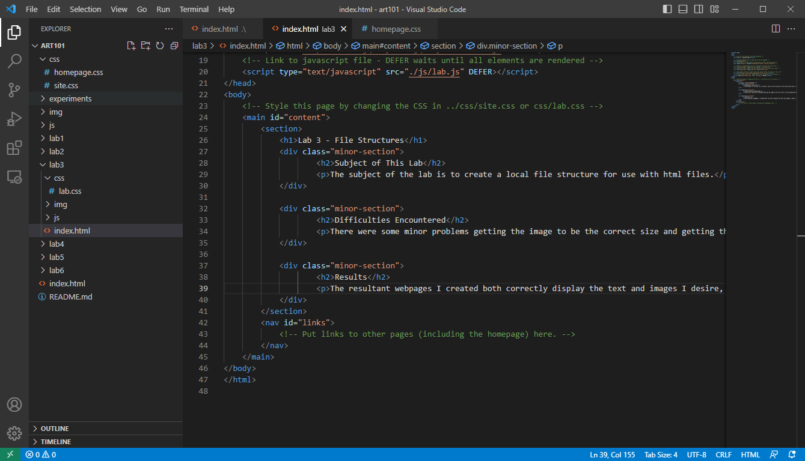
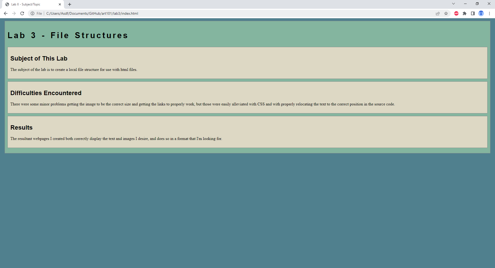

Lab 3 - File Structures
Subject of This Lab
The subject of the lab is to create a local file structure for use with html files.
Difficulties Encountered
There were some minor problems getting the image to be the correct size and getting the links to properly work, but those were easily alleviated with CSS and with properly relocating the text to the correct position in the source code.
Results
The resultant webpages I created both correctly display the text and images I desire, and does so in a format that I'm looking for.
This is an image for my source code for the index.html file.
This is an image for my webpage created from my source code.